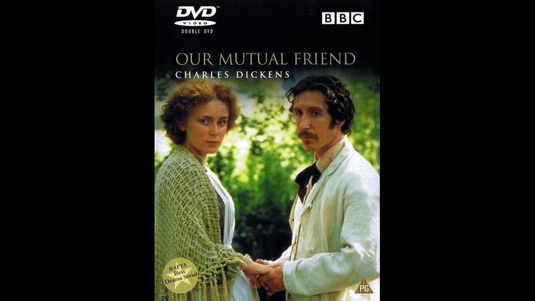

1998

CAST
John Rokesmith
-
Steven Mackintosh
Bella Wilfer
-
Anna Friel
Eugene Wrayburn
-
Paul McGann
'Rogue' Riderhood
-
David Bradley
Nicodemus Boffin
-
Peter Vaughan
Lizzie Hexam
-
Keeley Hawes
Gaffer Hexam
-
David Schofield
Mortimer Lightwood
-
Dominic Mafham
Henrietta Boffin
-
Pam Ferris
Reginald Wilfer
-
Peter Wight
Jenny Wren
-
Katy Murphy
Bradley Headstone
-
David Morrissey
Alfred Lammle
-
Anthony Calf
Sophronia Lammle
-
Doon Mackichan
Sloppy
-
Martin Hancock
Mrs. Wilfer
-
Heather Tobias
Lavinia Wilfer
-
Catriona Yuill
Abbey Potterson
-
Linda Bassett
Mr. 'Dolls'
-
Willie Ross
Mr. Venus
-
Timothy Spall
Mr. Riah
-
Cyril Shaps
Silas Wegg
-
Kenneth Cranham
Charley Hexam
-
Paul Bailey
Police Inspector
-
Roger Frost
Pleasant Riderhood
-
Rachel Power
Anastasia Veneering
-
Rose English
Hamilton Veneering
-
Michael Culkin
Melvin Twemlow
-
Robert Lang
Betty Higden
-
Edna Doré
Rev. Frank Milvey
-
Richard Stirling
Lady Tippins
-
Margaret Tyzack
George Radfoot
-
Richard Hanson
First Pub Regular
-
Eddie Webber
Second Pub Regular
-
Alan Talbot
Little Johnny
-
Bertie Shelley
Lammle's Maid
-
Vanessa Hadaway
Doctor
-
John Dicks
First Guest
-
Sarah Crowden
Second Guest
-
Cate Fowler
Third Guest
-
John Dallimore
Fourth Guest
-
Peter Howell
Fifth Guest
-
Ray Gardner
Miss Peecher
-
Gina Lamb
First Pupil
-
Jade Davidson
Second Pupil
-
Victoria Harding
Market Man
-
Phillip Shelley
Market Woman
-
Brigid Erin Bates
Coroner
-
Michael Cronin
Footman
-
Mike Eastman (uncredited)
CREATIVE TEAM
Director
-
Julian Farino
Screenplay
-
Sandy Welch
REVIEW
"As the fortunes of the characters rise and fall, the River Thames flows eternally on, the symbolic backbone of this remarkable story. At six hours, this version of Our Mutual Friend is a long production, but not a moment too long. A mystery, a love story, a critique of the pursuit of wealth and status, this is perhaps the best adaptation of Dickens ever to be committed to film." - Simon Leake, Amazon.com